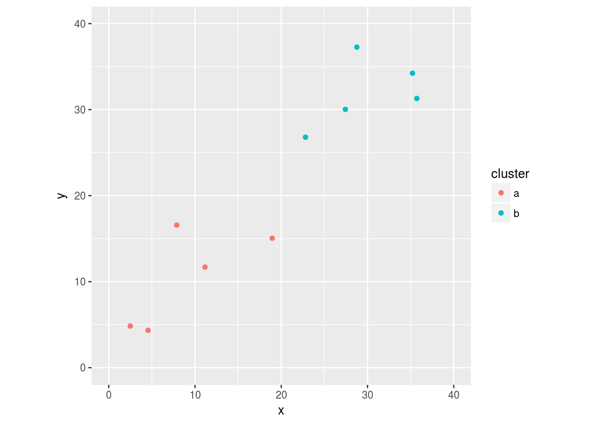

Summarizing several models using broom and purrr
Introduction
broom is supposed to be a powerful way to summarize several models at once, and so it is. The trouble is, the examples show how to fit the same model to different subsets of a data set. I had something different in mind: I had one data set, and three different models on that same data. Could I do something similar there? It wasn’t clear to me how.
Illustrative data
The data here came from Albright’s book. These are observations on the diameter and wood volume of ten pine trees, and the question is whether we can model the volume given the diameter. This is of practical importance, because the volume of wood in a tree represents the financial value of the tree but is hard to measure (until the tree is cut down), while the diameter is easy to measure with a tape measure and a calculation involving \(\pi\).
Let’s start by examining the data:
library(tidyverse)## ── Attaching packages ─────────────────────────────────────────────────────────────────────────── tidyverse 1.2.1 ──## ✔ ggplot2 2.2.1.9000 ✔ purrr 0.2.4
## ✔ tibble 1.4.2 ✔ dplyr 0.7.4
## ✔ tidyr 0.8.0 ✔ stringr 1.3.0
## ✔ readr 1.1.1 ✔ forcats 0.3.0## ── Conflicts ────────────────────────────────────────────────────────────────────────────── tidyverse_conflicts() ──
## ✖ dplyr::filter() masks stats::filter()
## ✖ dplyr::lag() masks stats::lag()library(broom)
my_url="http://www.utsc.utoronto.ca/~butler/c32/pinetrees.txt"
trees=read_delim(my_url," ")## Parsed with column specification:
## cols(
## diameter = col_integer(),
## volume = col_integer()
## )trees## # A tibble: 10 x 2
## diameter volume
## <int> <int>
## 1 32 185
## 2 29 109
## 3 24 95
## 4 45 300
## 5 20 30
## 6 30 125
## 7 26 55
## 8 40 246
## 9 24 60
## 10 18 15What kind of relationship do we have?
ggplot(trees,aes(x=diameter,y=volume))+geom_point()
Upward, strong and apparently linear.
Models
So our first model is a straight-line relationship:
volume.1=lm(volume~diameter,data=trees)
summary(volume.1)##
## Call:
## lm(formula = volume ~ diameter, data = trees)
##
## Residuals:
## Min 1Q Median 3Q Max
## -36.497 -9.982 1.751 8.959 28.139
##
## Coefficients:
## Estimate Std. Error t value Pr(>|t|)
## (Intercept) -191.749 23.954 -8.005 4.35e-05 ***
## diameter 10.894 0.801 13.600 8.22e-07 ***
## ---
## Signif. codes: 0 '***' 0.001 '**' 0.01 '*' 0.05 '.' 0.1 ' ' 1
##
## Residual standard error: 20.38 on 8 degrees of freedom
## Multiple R-squared: 0.9585, Adjusted R-squared: 0.9534
## F-statistic: 185 on 1 and 8 DF, p-value: 8.217e-07This has a nice high R-squared and (it turns out) reasonably-behaved residuals.
The problem we run into is that output: it is nice enough for looking at, but it’s not very helpful for doing anything else with. This is where broom comes in: it has (for us) two handy functions glance and tidy that summarize models respectively in one line:
glance(volume.1)## r.squared adj.r.squared sigma statistic p.value df logLik
## 1 0.9585402 0.9533577 20.38484 184.9578 8.21677e-07 2 -43.22158
## AIC BIC deviance df.residual
## 1 92.44316 93.35092 3324.333 8and in a data frame:
tidy(volume.1)## term estimate std.error statistic p.value
## 1 (Intercept) -191.74923 23.9536222 -8.00502 4.34715e-05
## 2 diameter 10.89407 0.8010394 13.59992 8.21677e-07The advantage to this is that extracting any of these values is easy using dplyr tools: we can see what the columns are called, and the term column contains the name of each explanatory variable.
I couldn’t see any good reason why the relationship had to be linear, except that a linear model appeared to fit well. Could I be a bit more scientific? Well, I could pretend that a tree was shaped like a cone, in which case its volume in terms of its diameter would be
\[ V = {\pi d^2 h \over 12} \]
The problem now is that we don’t know the height of these trees. If we pretend that the height is constant (which I think is a very shaky assumption), the volume is proportional to the diameter squared. I don’t want to get into the quicksand of models without intercepts, so I’ll do that this way:
volume.2=lm(volume~I(diameter^2),data=trees)
summary(volume.2)##
## Call:
## lm(formula = volume ~ I(diameter^2), data = trees)
##
## Residuals:
## Min 1Q Median 3Q Max
## -29.708 -9.065 -5.722 3.032 40.816
##
## Coefficients:
## Estimate Std. Error t value Pr(>|t|)
## (Intercept) -30.82634 13.82243 -2.23 0.0563 .
## I(diameter^2) 0.17091 0.01342 12.74 1.36e-06 ***
## ---
## Signif. codes: 0 '***' 0.001 '**' 0.01 '*' 0.05 '.' 0.1 ' ' 1
##
## Residual standard error: 21.7 on 8 degrees of freedom
## Multiple R-squared: 0.953, Adjusted R-squared: 0.9471
## F-statistic: 162.2 on 1 and 8 DF, p-value: 1.359e-06This also has a nice high R-squared and well-behaved residuals.
If you object to my fitting a squared term without including a linear term, well, I can do that too:
volume.2a=update(volume.2,.~.+diameter)
summary(volume.2a)##
## Call:
## lm(formula = volume ~ I(diameter^2) + diameter, data = trees)
##
## Residuals:
## Min 1Q Median 3Q Max
## -34.118 -8.134 -2.158 3.774 32.231
##
## Coefficients:
## Estimate Std. Error t value Pr(>|t|)
## (Intercept) -139.31411 96.31433 -1.446 0.191
## I(diameter^2) 0.05696 0.10102 0.564 0.590
## diameter 7.30501 6.42057 1.138 0.293
##
## Residual standard error: 21.31 on 7 degrees of freedom
## Multiple R-squared: 0.9603, Adjusted R-squared: 0.949
## F-statistic: 84.75 on 2 and 7 DF, p-value: 1.242e-05This is rather confusing: the high R-squared is accompanied by two non-significant explanatory variables. I think this is because diameter and diameter-squared are highly correlated:
with(trees,cor(diameter,I(diameter^2)))## [1] 0.9914553so what I should do is to centre the diameter values before including them in the regression:
trees %>% mutate(diam_c=diameter-mean(diameter)) %>%
lm(volume~diam_c+I(diam_c^2),data=.) %>% summary()##
## Call:
## lm(formula = volume ~ diam_c + I(diam_c^2), data = .)
##
## Residuals:
## Min 1Q Median 3Q Max
## -34.118 -8.134 -2.158 3.774 32.231
##
## Coefficients:
## Estimate Std. Error t value Pr(>|t|)
## (Intercept) 118.31154 9.39284 12.596 4.59e-06 ***
## diam_c 10.58566 1.00034 10.582 1.47e-05 ***
## I(diam_c^2) 0.05696 0.10102 0.564 0.59
## ---
## Signif. codes: 0 '***' 0.001 '**' 0.01 '*' 0.05 '.' 0.1 ' ' 1
##
## Residual standard error: 21.31 on 7 degrees of freedom
## Multiple R-squared: 0.9603, Adjusted R-squared: 0.949
## F-statistic: 84.75 on 2 and 7 DF, p-value: 1.242e-05This says that adding (centred) diameter-squared has no value over diameter itself, but the linear term is strongly significant. The suggestion here, therefore, is that my assumption of constant tree height was the thing that went wrong.
So, what to do? In this paper, it suggests a power law relationship between volume and diameter, with constant parameters for a particular type of tree:
\[ V = \alpha_1 d^{\alpha_2} \] This is evidently non-linear, but we can take logs of both sides:
\[ \ln V = \ln \alpha_1 + \alpha_2 \ln d\] and now we have a linear relationship between the logs of volume and diameter, which a regression will allow us to estimate:
volume.3=lm(log(volume)~log(diameter),data=trees)
summary(volume.3)##
## Call:
## lm(formula = log(volume) ~ log(diameter), data = trees)
##
## Residuals:
## Min 1Q Median 3Q Max
## -0.40989 -0.22341 0.01504 0.10459 0.53596
##
## Coefficients:
## Estimate Std. Error t value Pr(>|t|)
## (Intercept) -5.9243 1.1759 -5.038 0.001 **
## log(diameter) 3.1284 0.3527 8.870 2.06e-05 ***
## ---
## Signif. codes: 0 '***' 0.001 '**' 0.01 '*' 0.05 '.' 0.1 ' ' 1
##
## Residual standard error: 0.3027 on 8 degrees of freedom
## Multiple R-squared: 0.9077, Adjusted R-squared: 0.8962
## F-statistic: 78.68 on 1 and 8 DF, p-value: 2.061e-05By making this transformation, we have moved from constant variance of errors in estimating \(V\) to constant variance in estimating \(\ln V\), which has the effect of being constant variance in percentage errors in estimating \(V\). I think this is reasonable: you might be able to estimate a volume to within 10% rather than to within a fixed number of cubic inches, regardless of the size of the tree.
The estimated power is just over 3.
Summarizing multiple models
So now we have three models. How can we use broom methods to put the model summaries side by side? The pseudo-code idea is “for each model, run glance on it, and then glue the one-row data frames together”. This in turn suggests map from purrr followed by bind_rows. But how are we going to create the iteration over the fitted models? I thought, “well, map likes to work on lists, so maybe I can put the models into a list first”:
model_list=list(volume.1,volume.2,volume.3)
map(model_list,glance) %>% bind_rows()## r.squared adj.r.squared sigma statistic p.value df logLik
## 1 0.9585402 0.9533577 20.3848388 184.95779 8.216770e-07 2 -43.221582
## 2 0.9530072 0.9471331 21.7024608 162.23895 1.359294e-06 2 -43.847924
## 3 0.9077109 0.8961748 0.3027174 78.68414 2.061375e-05 2 -1.124113
## AIC BIC deviance df.residual
## 1 92.443164 93.350919 3324.3332304 8
## 2 93.695848 94.603604 3767.9744307 8
## 3 8.248226 9.155981 0.7331027 8and it works! For example, you can run your eyes down the first column to compare R-squared values. I’m not sure how valuable it is to have all the intercepts and slopes side by side in this case, but you can do that in the same way:
map(model_list,tidy) %>% bind_rows()## term estimate std.error statistic p.value
## 1 (Intercept) -191.7492279 23.95362215 -8.005020 4.347150e-05
## 2 diameter 10.8940704 0.80103937 13.599919 8.216770e-07
## 3 (Intercept) -30.8263421 13.82242771 -2.230168 5.628219e-02
## 4 I(diameter^2) 0.1709085 0.01341794 12.737305 1.359294e-06
## 5 (Intercept) -5.9242712 1.17585198 -5.038280 1.003770e-03
## 6 log(diameter) 3.1283899 0.35267711 8.870408 2.061375e-05This would probably benefit from a column naming the model to which each row refers.
Addendum (2017-07-21)
Aurélien, in the comments (below), suggested using map_df instead of map. The advantage of this is that it returns a data frame directly, without the need for bind_rows. I always forget that this is out there alongside map_dbl, map_chr and the others. I’m also going to take the other suggestion, which is, instead of making a simple list out of the models, make a named list, thus:
model_list=list(linear=volume.1, square=volume.2, power=volume.3)
map_df(model_list,glance,.id="Model")## Model r.squared adj.r.squared sigma statistic p.value df
## 1 linear 0.9585402 0.9533577 20.3848388 184.95779 8.216770e-07 2
## 2 square 0.9530072 0.9471331 21.7024608 162.23895 1.359294e-06 2
## 3 power 0.9077109 0.8961748 0.3027174 78.68414 2.061375e-05 2
## logLik AIC BIC deviance df.residual
## 1 -43.221582 92.443164 93.350919 3324.3332304 8
## 2 -43.847924 93.695848 94.603604 3767.9744307 8
## 3 -1.124113 8.248226 9.155981 0.7331027 8Oh yes, so much better. The key is the extra argument .id in map_df that does exactly what I was wondering about: identifying the models. Using the named list means that I don’t have to remember which model volume.1 was: I can give it a mnemonic label and that is what will appear in the output.
I imagine the same idea works for tidy:
map_df(model_list,tidy,.id="Model")## Model term estimate std.error statistic p.value
## 1 linear (Intercept) -191.7492279 23.95362215 -8.005020 4.347150e-05
## 2 linear diameter 10.8940704 0.80103937 13.599919 8.216770e-07
## 3 square (Intercept) -30.8263421 13.82242771 -2.230168 5.628219e-02
## 4 square I(diameter^2) 0.1709085 0.01341794 12.737305 1.359294e-06
## 5 power (Intercept) -5.9242712 1.17585198 -5.038280 1.003770e-03
## 6 power log(diameter) 3.1283899 0.35267711 8.870408 2.061375e-05It does, and the advantage here is that tidy can produce a variable number of rows for each model, but the Model column properly labels them, however many there are.